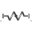

SpringMassSystemMass attached with a spring to the world frame |
|
Diagram
{kind=link}
Information
This information is part of the Modelica Standard Library maintained by the Modelica Association.
This example shows the two different ways how force laws can be utilized:
- In the left system a body is attached via a prismatic
joint to the world frame. The prismatic joint has two
1-dimensional translational flanges (called "support" and "axis")
that allows to connect elements from the Modelica.Mechanics.Translational
library between the support and the axis connector. The effect is
that the force generated by the 1-dimensional elements acts as driving
force in the axis of the prismatic joint. In the example a simple
spring is used.
The advantage of this approach is that the many elements from the Translational library can be easily used here and that this implementation is usually more efficient as when using 3-dimensional springs. - In the right system the same model is defined. The difference is that a 3-dimensional spring from the Modelica.Mechanics.MultiBody.Forces library is used. This has the advantage to get a nice animation of the force component.
Parameters (1)
| animation |
Value: true Type: Boolean Description: = true, if animation shall be enabled |
|---|
Components (9)
| world |
Type: World |
|
|---|---|---|
| p1 |
Type: Prismatic |
|
| spring1 |
Type: Spring |
|
| body1 |
Type: Body |
|
| bar1 |
Type: FixedTranslation |
|
| bar2 |
Type: FixedTranslation |
|
| body2 |
Type: Body |
|
| p2 |
Type: Prismatic |
|
|  | spring2 |
Type: Spring |